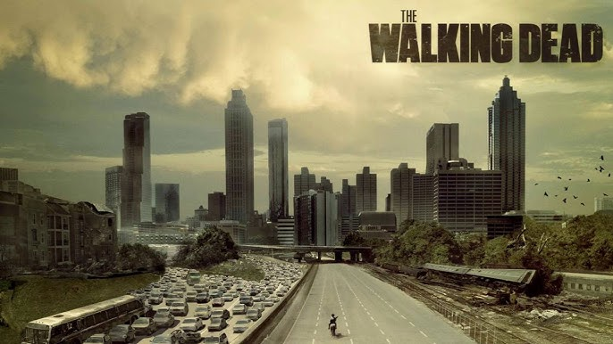
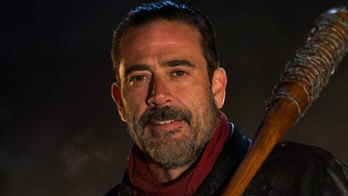
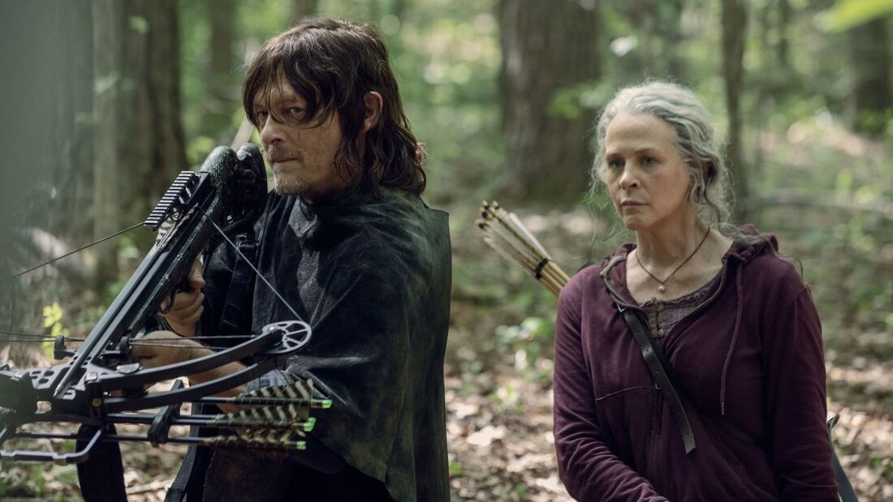
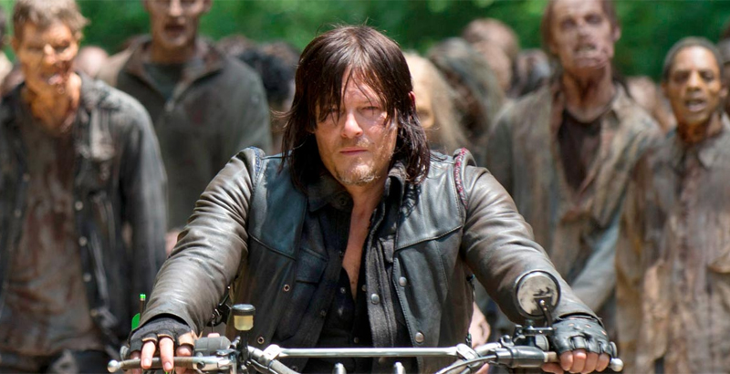
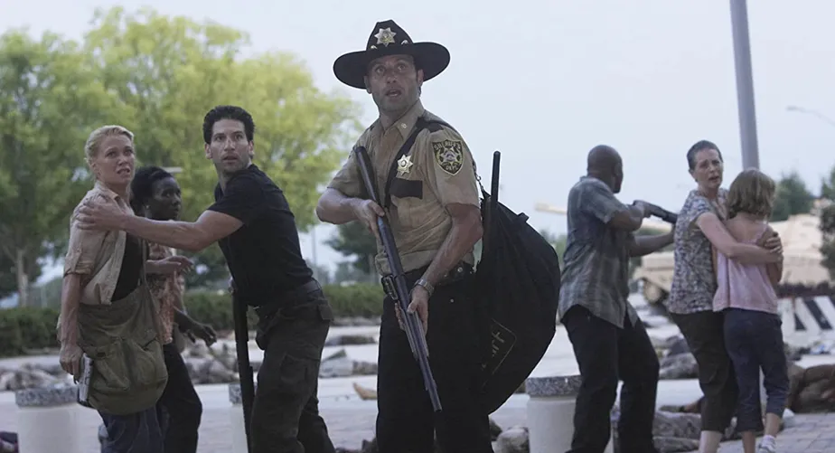
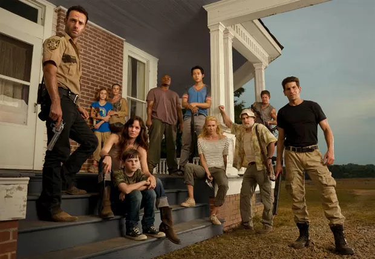
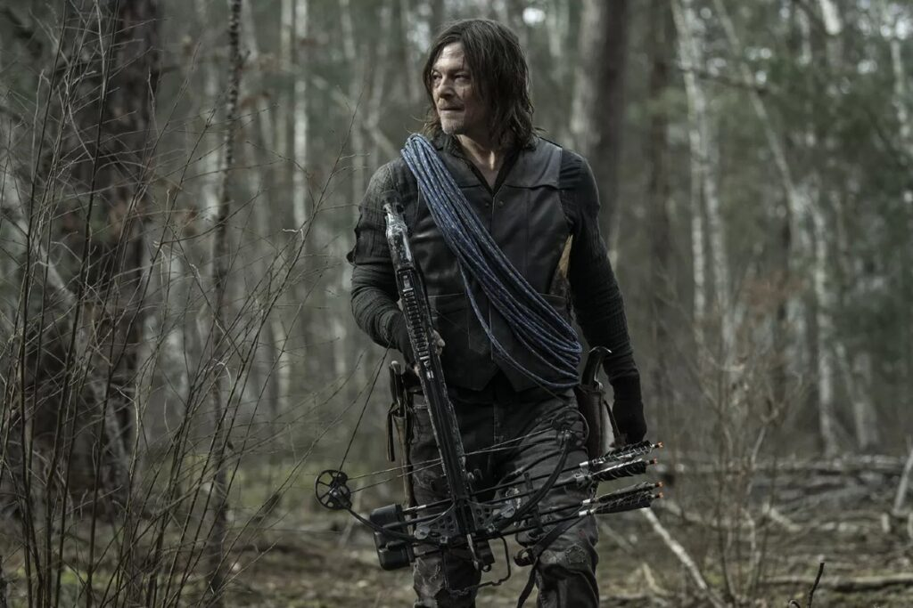
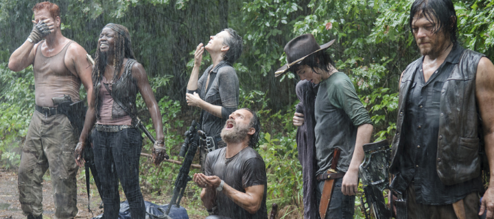

The Walking Dead é uma série de TV baseada nos quadrinhos de Robert Kirkman, que mistura terror, drama e sobrevivência.
A história começa quando Rick Grimes, um xerife, acorda de um coma e descobre que o mundo foi devastado por um apocalipse zumbi. Os mortos-vivos — chamados de walkers — dominaram tudo, e a sociedade entrou em colapso.
Rick parte em busca de sua família e acaba se tornando líder de um grupo de sobreviventes. Ao longo da trama, eles precisam lidar não só com os zumbis, mas principalmente com outros humanos, que muitas vezes se mostram mais perigosos do que os mortos.
Cada temporada mostra novos desafios:
No decorrer da série, personagens importantes surgem, evoluem e também morrem, trazendo muita carga emocional.
A grande mensagem da obra é: mais do que lutar contra zumbis, é sobre como a humanidade resiste e se transforma em um mundo destruído.
Rick é considerado o personagem principal tanto dos quadrinhos como da série. Ele começa como um policial que acorda no hospital após ter sido alvejado e ter estado em coma. Ao perceber que o mundo foi invadido por zumbis ele se aventura na busca de sua mulher e filho. Durante toda a história, Rick se torna o líder dos sobreviventes que encontra e vive atormentado com o medo de perder sua humanidade.
Daryl é um personagem totalmente original da série, não aparecendo nos quadrinhos de The Walking Dead. Porém, o personagem representado por Norman Reedus se tornou em um dos mais populares da franquia. No início de seu percurso, Daryl é volátil e temperamental, mas tolerado pelo grupo devido a suas habilidades na caça e na luta contra os mortos-vivos. Mais tarde, ele começa criando ligações fortes com os sobreviventes, se tornando em um dos membros mais importantes do grupo. A história de origem de Daryl é contada no game The Walking Dead: Survival Instinct.
Michonne é uma das personagens mais adoradas pelos fãs tanto nos quadrinhos como na telinha. Armada com uma catana, ela encontrou o grupo de sobreviventes liderado por Rick e se tornou em um membro valioso. A sua história antes de se juntar ao grupo, embora ligeiramente alterada na série, é uma das mais trágicas da franquia.
Outro vilão carismático e brutal, Negan lidera um grupo de sobreviventes na comunidade Santuário. Ele entra em contacto com Rick e os restantes sobreviventes ao tentar oprimir as outras comunidades de forma a recolher recursos para sua própria sobrevivência.
|  |  |  |  |  |  |  |  |